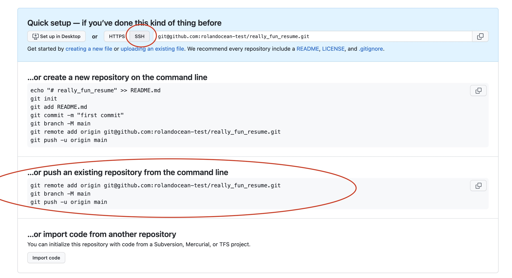

Git/GitHub Cheatsheet!
Contents
Git/GitHub Cheatsheet!¶
Here are a list of the commands you need to create, commit and push material to a remote GitHub repository.
First move into the directory where your project is located. In the examples below, the project folder is called ‘my_project_folder’:¶
$ cd path/to/my_project_folder
From within the folder, initialize your repository (only need to do once):¶
$ git init
Add content, getting it ready to commit:¶
This adds one file, named “my_file” in example below.¶
$ git add my_file
This adds all the content within your poject directory:¶
$ git add ./*
Commit the material you added, with a message:¶
$ git commit -m "Message about what I am doing"
Now move to GitHub. If you havent already made one, make a new repository, usually with the same name as my_project_folder¶
Follow the instructions that come next from the github.com website to push to your new repository (repeated below) but make sure you’ve selected the “SSH” option on the top of the repository settings (for our class… this is how we’re authenticating):

Back in Terminal - follow instructions above and push your repo. to GitHub:¶
$ git remote add origin git@github.com:<your_username>/my_project_folder.git
$ git branch -M main
$ git push -u origin main
(hopefully) Obviously, in the first command from the list above, you’ll change your_username and my_project_folder to your actual username and the actual name of your new repository (see example in image for my project).
For subsequent modificaitons:¶
Once you’ve made a repository the first time, and pushed to it the first time, if you modify it within your local project folder, you can skip a few of the steps above. The ones you’d still do if you were just updating your project, might include the following:
$ git add <my_file>
or
$ git add ./*
$ git commit -m "Message about Awesome Update"
$ git push -u origin main
Check out your updates on GitHub.com